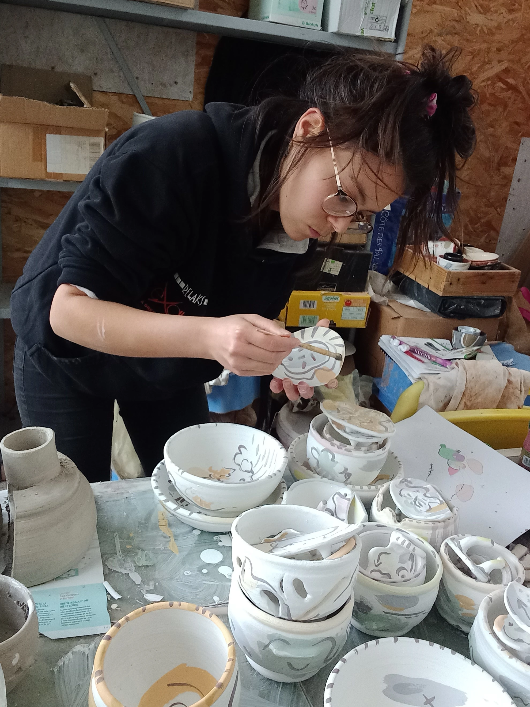

Je suis céramiste, créatrice curieuse et passionnée. Créatrice-baroudeuse avant tout, je navigue entre le dessin et l’objet dans un éternel aller-retour. Ce va-et-vient nourrit mon geste, affine mon regard, et donne naissance à des pièces qui racontent plus qu’elles ne décorent.
J’ai compris que ce qui me berce, ce n’est pas la terre, ni la forme, ni la couleur — c’est le faire. Le faire dans sa plus simple expression, dans sa plus vibrante nécessité. Et la céramique, avec sa patience et sa vérité, répond pleinement à ce besoin.
J’aime comprendre et faire avec ce que le monde nous offre.
Chaque création est une réponse, résultat d'une exploration, une trace du temps.